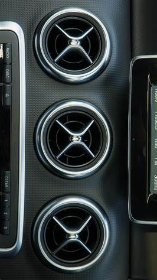
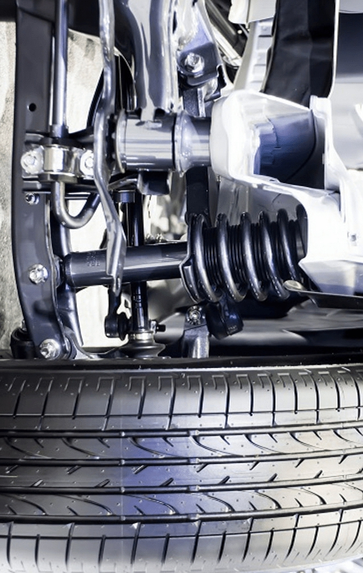

"Bagaimana cara mengatasi masalah tersebut ? Dan
apa sih pentingnya grill kabin di mobil Anda? Yuk
simak informasi selengkapnya seputar masalah grill
kabin tidak ada angin. Siapa tau dapat membantu
permasalahan sobat."
Filter AC Mobil Tersumbat? Berikut
Penyebabnya...
"Apa Sih Penyebab Filter AC Tersumbat? Berbicara
mengenai masalah AC yang tersumbat, tidak terlepas
juga dari kondensor AC yang bermasalah."

Tips Merawat Komponen Kaki-Kaki Mobil
"komponen kaki-kaki mobil memiliki beberapa bagian
yang saling mendukung dan menopang. Ya tentu saja
untuk mendapatkan performa yang lebih optimal. Apa
saja sih komponennya?"

Apa Fungsi Coilover? Banyak Yang Belum
Tahu
"sudahkah anda mengetahui kegunaan dan fungsi dari
coilover suspenssion ? Memang tidak begitu penting
mengetahuinya, namun tidak ada salahnya untuk
menambah wawasan."